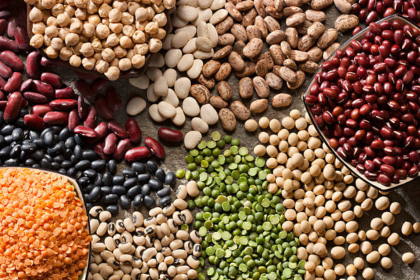
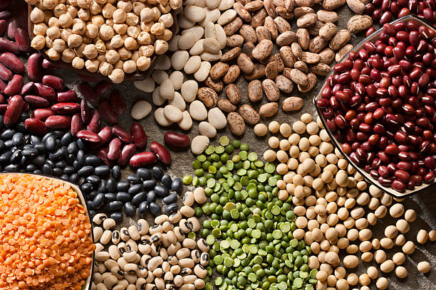
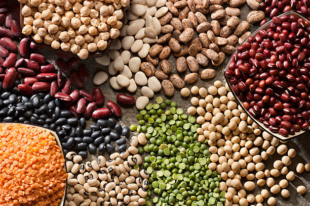

Growing Apple involves several steps, from land preparation to harvest. Here's a detailed step-by-step guide:
1] Choose a Suitable Location: Select apple varieties suited to your climate. Some apples need more chill hours (cold weather) than others.Apples prefer well-drained, loamy soil with a pH between 6.0 and 7.0. Perform a soil test to determine if any amendments are needed.
2] Germination and Seedling Stage:
Place the tree in the hole, ensuring the graft union (the swollen area above the roots) is above the soil line. Backfill with soil, firming it around the roots, and water thoroughly.
3] Watering:
Keep the soil moist but not waterlogged. Young trees need regular watering, especially during dry periods.
4] Pruning:
Prune apple trees annually to remove dead or diseased wood, shape the tree, and allow sunlight to penetrate the canopy. Pruning is typically done in late winter or early spring.
5] Fertilization:
Avoid fertilizing the first year after planting. Apply a balanced fertilizer (e.g., 10-10-10) in early spring. Adjust based on soil test recommendations and tree growth.
6] Harvesting:
Apples are typically ready to harvest in late summer to fall, depending on the variety.Apples are ripe when they easily separate from the tree with a gentle twist and lift. The seeds should be brown, and the fruit should have its characteristic color.
By following these steps, you can successfully grow healthy apple trees and enjoy a bountiful harvest.
اردو
سیب کو اگانے میں زمین کی تیاری سے لے کر کٹائی تک کئی مراحل شامل ہوتے ہیں۔ یہاں ایک تفصیلی مرحلہ وار گائیڈ ہے:
1] مناسب مقام کا انتخاب کریں: اپنی آب و ہوا کے لیے موزوں سیب کی اقسام منتخب کریں۔ کچھ سیبوں کو دوسروں کے مقابلے میں زیادہ ٹھنڈا وقت (ٹھنڈا موسم) درکار ہوتا ہے۔ سیب اچھی طرح سے خشک، چکنی مٹی کو ترجیح دیتے ہیں جس کا پی ایچ 6.0 اور 7.0 کے درمیان ہو۔ اس بات کا تعین کرنے کے لیے مٹی کا ٹیسٹ کروائیں کہ آیا کسی ترمیم کی ضرورت ہے۔
2] انکرن اور بیج کا مرحلہ:
درخت کو سوراخ میں رکھیں، اس بات کو یقینی بناتے ہوئے کہ گرافٹ یونین (جڑوں کے اوپر سوجن والا علاقہ) مٹی کی لکیر کے اوپر ہو۔ مٹی کے ساتھ بیک فل کریں، اسے جڑوں کے ارد گرد مضبوط کریں، اور اچھی طرح سے پانی دیں۔
3] پانی:
مٹی کو نم رکھیں لیکن پانی جمع نہ ہوں۔ جوان درختوں کو باقاعدگی سے پانی دینے کی ضرورت ہوتی ہے، خاص طور پر خشک موسم میں۔
4] کاٹنا:
مردہ یا بیمار لکڑی کو ہٹانے کے لیے سیب کے درختوں کی سالانہ کٹائی کریں، درخت کی شکل دیں، اور سورج کی روشنی کو چھتری میں داخل ہونے دیں۔ کٹائی عام طور پر سردیوں کے آخر یا موسم بہار کے شروع میں کی جاتی ہے۔
5] فرٹیلائزیشن:
پودے لگانے کے بعد پہلے سال کھاد ڈالنے سے گریز کریں۔ موسم بہار کے شروع میں متوازن کھاد (مثلاً 10-10-10) لگائیں۔ مٹی کی جانچ کی سفارشات اور درختوں کی نشوونما کی بنیاد پر ایڈجسٹ کریں۔
6] کٹائی:
سیب عام طور پر موسم گرما کے آخر میں موسم خزاں میں کٹائی کے لیے تیار ہوتے ہیں، مختلف قسم کے لحاظ سے۔ سیب اس وقت پک جاتے ہیں جب وہ ہلکے موڑ اور اٹھا کر درخت سے آسانی سے الگ ہوجاتے ہیں۔ بیج بھورے ہونے چاہئیں، اور پھل کا رنگ خاصا ہونا چاہیے۔
ان اقدامات پر عمل کر کے، آپ سیب کے صحت مند درختوں کو کامیابی سے اگا سکتے ہیں اور بھرپور فصل کا لطف اٹھا سکتے ہیں۔
వినండి
2. SAFFRON / 2.زعفران
ENGLISH
Saffron involves several steps, from land preparation to harvest. Here's a detailed step-by-step guide:
1] Seedling Stage:
Saffron grows best in a Mediterranean climate with hot, dry summers and cool to cold winters. Well-drained, sandy, or loamy soil is ideal. Avoid heavy clay soils.Slightly acidic to neutral soil with a pH between 6.0 and 7.0.
2] Planting:
Plant corms 3-4 inches (7-10 cm) deep and space them 4-6 inches (10-15 cm) apart in rows that are 12-18 inches (30-45 cm) apart.
3] Watering:
Keep the soil moderately moist during the growing season, but avoid waterlogging. Reduce watering as the plants mature and approach dormancy.
4] Fertilization:
Apply a balanced fertilizer (e.g., 10-10-10) in early spring if needed, based on soil test results.
5] Harvesting Stage:
Harvest saffron flowers in the fall, typically in October to November.Pick the flowers early in the morning when they are fully open. Carefully remove the red stigmas (the saffron threads) from the flowers.
اردو
زعفران میں زمین کی تیاری سے لے کر کٹائی تک کئی مراحل شامل ہوتے ہیں۔ یہاں ایک تفصیلی مرحلہ وار گائیڈ ہے:
1] بیج لگانے کا مرحلہ:
زعفران بحیرہ روم کی آب و ہوا میں گرم، خشک گرمیاں اور ٹھنڈی سے سرد سردیوں میں بہترین اگتا ہے۔ اچھی طرح سے نکاسی والی، ریتلی یا چکنی مٹی مثالی ہے۔ بھاری مٹی والی مٹی سے پرہیز کریں۔ 6.0 اور 7.0 کے درمیان pH والی غیر جانبدار مٹی سے تھوڑی تیزابیت والی۔
2] پودے لگانا:
3-4 انچ (7-10 سینٹی میٹر) گہرائی میں پودے لگائیں اور انہیں 12-18 انچ (30-45 سینٹی میٹر) قطاروں میں 4-6 انچ (10-15 سینٹی میٹر) کے فاصلے پر رکھیں۔
3] پانی دینا:
بڑھتے ہوئے موسم کے دوران مٹی کو اعتدال سے نم رکھیں، لیکن پانی جمع ہونے سے بچیں۔ جیسے جیسے پودے پختہ ہو جائیں اور خوابیدگی کے قریب پہنچ جائیں پانی دینا کم کریں۔
4] فرٹیلائزیشن:
مٹی کے ٹیسٹ کے نتائج کی بنیاد پر اگر ضرورت ہو تو موسم بہار کے شروع میں متوازن کھاد (مثلاً 10-10-10) لگائیں۔
5] کٹائی کا مرحلہ:
زعفران کے پھولوں کی کٹائی موسم خزاں میں کریں، عام طور پر اکتوبر سے نومبر میں۔ پھولوں کو صبح سویرے چنیں جب وہ پوری طرح کھل جائیں۔ پھولوں سے سرخ داغ (زعفرانی دھاگے) کو احتیاط سے ہٹا دیں۔
వినండి
3. WALNUTS / 3.اخروٹ
ENGLISH
Growing Walnuts involves several key steps.
1] Planting:
Plant walnut trees in late winter or early spring while they are still dormant.The most common species for nut production are the English walnut (Juglans regia) and the black walnut (Juglans nigra).English walnuts prefer temperate climates with mild winters, while black walnuts can tolerate a wider range of conditions.
2] Water Management:
Keep the soil consistently moist, especially during the first few years. Mature trees are more drought-tolerant but still benefit from regular watering.
3] Mulching:
Apply a 2-4 inch layer of mulch around the base of the tree to retain moisture, suppress weeds, and regulate soil temperature. Keep mulch away from the trunk.
4] Fertilization:
Apply a balanced fertilizer (e.g., 10-10-10) based on soil test results. Avoid over-fertilization, which can harm the tree.
5] Pest Management:
Use integrated pest management (IPM) practices, including cultural, biological, and chemical controls as needed. Common pests include walnut husk fly, codling moth, and aphids. Diseases include walnut blight and root rot.
6] Harvesting:
Harvest walnuts in the fall when the husks begin to split and the nuts fall to the ground.Shake the tree or use a pole to knock down the nuts. Collect the nuts from the ground promptly to prevent mold and deterioration.
By following these steps, you can effectively grow and harvest a healthy crop of walnuts.
اردو
اخروٹ اگانے میں کئی اہم اقدامات شامل ہیں۔
1] پودا لگانا:
اخروٹ کے درخت سردیوں کے آخر میں یا موسم بہار کے شروع میں لگائیں جب کہ وہ ابھی بھی غیر فعال ہیں۔ نٹ کی پیداوار کے لیے سب سے عام قسم انگریزی اخروٹ (Juglans regia) اور سیاہ اخروٹ (Juglans nigra) ہیں۔ انگریزی اخروٹ معتدل موسموں کو ہلکی سردیوں کے ساتھ ترجیح دیتے ہیں، جبکہ سیاہ اخروٹ حالات کی ایک وسیع رینج کو برداشت کر سکتا ہے۔
2] پانی کا انتظام:
مٹی کو مسلسل نم رکھیں، خاص طور پر پہلے چند سالوں کے دوران۔ بالغ درخت زیادہ خشک سالی برداشت کرتے ہیں لیکن پھر بھی باقاعدگی سے پانی دینے سے فائدہ اٹھاتے ہیں۔
3] ملچنگ:
نمی برقرار رکھنے، جڑی بوٹیوں کو دبانے اور مٹی کے درجہ حرارت کو منظم کرنے کے لیے درخت کی بنیاد کے گرد ملچ کی 2-4 انچ کی تہہ لگائیں۔ ملچ کو تنے سے دور رکھیں۔
4] فرٹیلائزیشن:
مٹی کے ٹیسٹ کے نتائج کی بنیاد پر متوازن کھاد (مثلاً 10-10-10) لگائیں۔ ضرورت سے زیادہ کھاد ڈالنے سے گریز کریں، جو درخت کو نقصان پہنچا سکتا ہے۔
5] کیڑوں کا انتظام:
انٹیگریٹڈ پیسٹ مینجمنٹ (IPM) کے طریقے استعمال کریں، بشمول ثقافتی، حیاتیاتی، اور کیمیائی کنٹرول ضرورت کے مطابق۔ عام کیڑوں میں اخروٹ کی بھوسی مکھی، کوڈلنگ موتھ اور افڈس شامل ہیں۔ بیماریوں میں اخروٹ کا جھلس جانا اور جڑوں کا سڑنا شامل ہیں۔
6] کاشت کاری:
اخروٹ کی کٹائی موسم خزاں میں کریں جب بھوسی پھٹنا شروع ہو جائے اور گری دار میوے زمین پر گر جائیں۔ درخت کو ہلائیں یا گری دار میوے کو گرانے کے لیے کھمبے کا استعمال کریں۔ گری دار میوے کو فوری طور پر زمین سے جمع کریں تاکہ سڑنا اور بگاڑ کو روکا جا سکے۔
ان اقدامات پر عمل کرتے ہوئے، آپ اخروٹ کی صحت مند فصل کو مؤثر طریقے سے اگاتے اور کاٹ سکتے ہیں۔
వినండి
4. ALMONDS / 4.بادام
ENGLISH
Growing almonds involves several key steps to ensure a healthy and productive crop. Here's a detailed step-by-step guide to growing almonds:
1] Seed Germination:
Almonds thrive in Mediterranean climates with hot, dry summers and mild, wet winters. They require a certain number of chill hours (cold weather) to produce nuts.hoose a variety suited to your climate and soil conditions. Common varieties include 'Nonpareil', 'Carmel', and 'Butte'. Plant almond trees in late winter or early spring while they are still dormant.
2] Vegetative Growth:
During this stage, the almonds grows vegetatively, which means it focuses on developing its stems, leaves, and roots. The leaves of the plant absorb sunlight and convert it into energy through the process of photosynthesis, which is used to produce new cells and tissues.
3] Watering:
Keep the soil consistently moist, especially during the first few years. Mature trees need regular watering, particularly during dry periods and the growing season.
4] Fertilization:
Apply a balanced fertilizer (e.g., 10-10-10) based on soil test results. Almonds particularly benefit from nitrogen, phosphorus, and potassium.
5] Harvest:
Harvest almonds in late summer to early fall when the hulls split open and the nuts dry naturally on the tree.Shake the tree or use a pole to knock down the nuts. Collect the nuts from the ground promptly to prevent mold and deterioration.
By following these steps, you can effectively grow and harvest a healthy crop of almonds.
اردو
ایک صحت مند اور پیداواری فصل کو یقینی بنانے کے لیے بادام اگانے میں کئی اہم اقدامات شامل ہیں۔ یہاں بادام اگانے کے لیے ایک تفصیلی مرحلہ وار گائیڈ ہے:
1] بیج کا انکرن:
بادام بحیرہ روم کے آب و ہوا میں گرم، خشک گرمیوں اور ہلکی، گیلی سردیوں کے ساتھ پروان چڑھتے ہیں۔ آپ کے آب و ہوا اور مٹی کے حالات کے مطابق گری دار میوے تیار کرنے کے لیے انہیں ایک خاص تعداد میں سردی کے اوقات (سرد موسم) کی ضرورت ہوتی ہے۔ عام اقسام میں 'نان پریل'، 'کارمل'، اور 'بٹ' شامل ہیں۔ بادام کے درخت سردیوں کے آخر میں یا موسم بہار کے شروع میں لگائیں جب وہ ابھی تک غیر فعال ہوں۔
2] سبزیوں کی نشوونما:
اس مرحلے کے دوران، بادام نباتاتی طور پر بڑھتا ہے، جس کا مطلب ہے کہ یہ اپنے تنوں، پتوں اور جڑوں کی نشوونما پر توجہ مرکوز کرتا ہے۔ پودے کے پتے سورج کی روشنی کو جذب کرتے ہیں اور فتوسنتھیس کے عمل کے ذریعے اسے توانائی میں تبدیل کرتے ہیں، جس کا استعمال نئے خلیات اور بافتوں کو پیدا کرنے کے لیے کیا جاتا ہے۔
3] پانی:
مٹی کو مسلسل نم رکھیں، خاص طور پر پہلے چند سالوں کے دوران۔ بالغ درختوں کو باقاعدگی سے پانی دینے کی ضرورت ہوتی ہے، خاص طور پر خشک موسم اور بڑھتے ہوئے موسم میں۔
4] فرٹیلائزیشن:
مٹی کے ٹیسٹ کے نتائج کی بنیاد پر متوازن کھاد (مثلاً 10-10-10) لگائیں۔ بادام خاص طور پر نائٹروجن، فاسفورس اور پوٹاشیم سے فائدہ اٹھاتے ہیں۔
5] فصل:
موسم گرما کے آخر سے موسم خزاں کے اوائل میں بادام کی کٹائی کریں جب گری دار میوے کھل جائیں اور گری دار میوے درخت پر قدرتی طور پر سوکھ جائیں۔ گری دار میوے کو فوری طور پر زمین سے جمع کریں تاکہ سڑنا اور بگاڑ کو روکا جا سکے۔
ان اقدامات پر عمل کرکے، آپ بادام کی صحت مند فصل کو مؤثر طریقے سے اگائیں اور کاٹ سکتے ہیں۔
వినండి
5. CABBAGE / 5.گوبھی
ENGLISH
Growing cabbage involves several steps from land preparation to harvesting. Here is a detailed step-by-step guide for growing cabbage:
1] Soil preparation:
cabbage grows best in well-drained soil with a pH of 6.0-7.5. The soil should be tilled to a depth of 6-8 inches and any weeds or rocks removed.
2] Planting:
Plant seeds 1-2 inches deep, spacing them 6-12 inches apart in rows that are 24-36 inches apart. The seeding rate is typically 4-5 pounds per acre.
3] Germination:
The seed will germinate within 7-10 days, provided the soil is moist and the temperature is warm enough. The seed will send out a small root and a shoot, which will eventually grow into the cabbage.
4] Growth:
cabbage undergo several growth stages: sprouting, vegetative growth, tuber initiation, tuber bulking, and maturation.
5] Monitoring:
Ensure the plants receive adequate water and nutrients throughout these stages. Protect from pests and diseases.
6] Harvesting:
Harvest when the plants start to yellow and die back. For early cabbage, harvest when the tubers reach a usable size, typically 70-90 days after planting. For main crop cabbages, wait until the vines are completely dead, usually 90-120 days after planting.
اردو
گوبھی اگانے میں زمین کی تیاری سے لے کر کٹائی تک کئی مراحل شامل ہوتے ہیں۔ یہاں گوبھی اگانے کے لیے مرحلہ وار تفصیلی گائیڈ ہے:
1] مٹی کی تیاری:
گوبھی 6.0-7.5 کے پی ایچ کے ساتھ اچھی طرح سے نکاسی والی مٹی میں بہترین اگتی ہے۔ مٹی کو 6-8 انچ کی گہرائی تک جوتنا چاہیے اور کوئی بھی گھاس یا پتھر ہٹا دیا جانا چاہیے۔
2] پودا لگانا:
بیجوں کو 1-2 انچ گہرائی میں لگائیں، ان قطاروں میں 6-12 انچ کا فاصلہ رکھیں جو 24-36 انچ کے فاصلے پر ہوں۔ بیج کی شرح عام طور پر 4-5 پاؤنڈ فی ایکڑ ہے۔
3] انکرن:
بیج 7-10 دنوں کے اندر اگے گا، بشرطیکہ مٹی نم ہو اور درجہ حرارت کافی گرم ہو۔ بیج ایک چھوٹی جڑ اور ایک گولی بھیجے گا، جو آخر کار گوبھی میں بڑھے گا۔
4] ترقی:
گوبھی ترقی کے کئی مراحل سے گزرتی ہے: انکرت، پودوں کی نشوونما، ٹبر کا آغاز، ٹبر کا بلکنگ، اور پختگی۔
5] مانیٹرنگ:
اس بات کو یقینی بنائیں کہ ان تمام مراحل میں پودوں کو مناسب پانی اور غذائی اجزاء ملیں۔ کیڑوں اور بیماریوں سے بچاؤ۔
6] کاشت کاری:
جب پودے پیلے ہونے لگیں اور دوبارہ مر جائیں تو کٹائی کریں۔ ابتدائی گوبھی کے لیے، اس وقت کٹائی کریں جب کند قابل استعمال سائز تک پہنچ جائیں، عام طور پر پودے لگانے کے 70-90 دن بعد۔ اہم فصل گوبھی کے لیے، انگوروں کے مکمل طور پر مرنے تک انتظار کریں، عام طور پر پودے لگانے کے 90-120 دن بعد۔
వినండి
6. CHERRIES / 6.چیری
ENGLISH
Growing Cherries involves several steps to ensure a healthy and productive crop. Here is a detailed step-by-step guide to growing cherries:
1] Seedling Stage:
Cherries require a temperate climate with cold winters (for chilling requirements) and warm, dry summers. Sweet cherries are more sensitive to climate than sour cherries.
2] Planting:
Plant cherry trees in early spring or late fall while they are dormant.
Cut the cane stalks into setts, each containing 2-3 buds.
Dig a hole twice the diameter of the root ball and deep enough to accommodate the root system.
Place the tree in the hole at the same depth it was growing in the nursery. Backfill with soil, firming it gently around the roots, and water thoroughly.
3] Watering:
Keep the soil consistently moist, especially during the first few years. Mature trees need regular watering, particularly during dry periods and the growing season.
4] Disease Management:
Use integrated pest management (IPM) practices, including cultural, biological, and chemical controls as needed. Common pests include cherry fruit fly, aphids, and borers. Diseases include brown rot, powdery mildew, and bacterial canker.
5] Harvesting:
Harvest cherries in late spring to early summer, depending on the variety and local climate.
اردو
چیری اگانے میں صحت مند اور پیداواری فصل کو یقینی بنانے کے لیے کئی اقدامات شامل ہیں۔ چیری اگانے کے لیے یہاں ایک تفصیلی مرحلہ وار گائیڈ ہے:
1] سیڈنگ کا مرحلہ:
چیری کو معتدل آب و ہوا کی ضرورت ہوتی ہے جس میں سرد موسم سرما (ٹھنڈا کرنے کی ضروریات کے لیے) اور گرم، خشک گرمیاں ہوتی ہیں۔ کھٹی چیریوں کی نسبت میٹھی چیری آب و ہوا کے لیے زیادہ حساس ہوتی ہے۔
2] پودا لگانا:
چیری کے درخت موسم بہار کے شروع میں یا موسم خزاں کے آخر میں لگائیں جب وہ غیر فعال ہوں۔
گنے کے ڈنڈوں کو سیٹوں میں کاٹ لیں، ہر ایک میں 2-3 کلیاں ہوں۔
جڑ کی گیند کے قطر سے دوگنا سوراخ کھودیں اور جڑ کے نظام کو ایڈجسٹ کرنے کے لیے کافی گہرا کریں۔
درخت کو سوراخ میں اسی گہرائی میں رکھیں جو نرسری میں اگ رہا تھا۔ مٹی کے ساتھ بیک فل کریں، اسے جڑوں کے ارد گرد آہستہ سے مضبوط کریں، اور اچھی طرح سے پانی دیں۔
3] پانی:
مٹی کو مسلسل نم رکھیں، خاص طور پر پہلے چند سالوں کے دوران۔ بالغ درختوں کو باقاعدگی سے پانی دینے کی ضرورت ہوتی ہے، خاص طور پر خشک موسم اور بڑھتے ہوئے موسم میں۔
4] بیماریوں کا انتظام:
انٹیگریٹڈ پیسٹ مینجمنٹ (IPM) کے طریقے استعمال کریں، بشمول ثقافتی، حیاتیاتی، اور کیمیائی کنٹرول ضرورت کے مطابق۔ عام کیڑوں میں چیری فروٹ فلائی، افڈس اور بورر شامل ہیں۔ بیماریوں میں بھوری سڑ، پاؤڈر پھپھوندی، اور بیکٹیریل کینکر شامل ہیں۔
5] کاشت کاری:
مختلف قسم اور مقامی آب و ہوا کے لحاظ سے موسم بہار کے آخر سے موسم گرما کے شروع میں چیری کی کٹائی کریں۔
వినండి
7. PULSES / 7.دالیں

ENGLISH
Here's a step-by-step guide to growing Pulses:
1] Seed Selection:
Choose high-quality seeds from a reputable source. Look for seeds that are free from any signs of damage or disease.
2] Sowing seeds:
Pulses seeds can be sown directly into the soil. Plant the seeds about 1/4 to 1/2 inch deep and space them 2-3 inches apart in rows that are 12-18 inches apart.
3] Watering:
Keep the soil evenly moist but not waterlogged after sowing. as plants require regular watering.
4] Fertilization:
Apply fertilizers based on soil test recommendations. pulses typically requires nitrogen (N), phosphorus (P), and potassium (K). Apply a balanced fertilizer at planting and additional nitrogen as needed during the growing season.
5] Manual Weeding:
Hand weed or use mechanical weeders to control weeds, especially during the early growth stages.
6] Harvesting:
Harvest when the pods are fully developed and dry. For chickpeas, pods turn brown and seeds are hard. For lentils, pods become tan or brown.
Pulse cultivation involves careful site selection, proper land preparation, selection and treatment of seeds, timely sowing, consistent irrigation, balanced nutrient management, regular weeding, effective pest and disease management, and timely harvesting and post-harvest handling. Following these steps ensures healthy growth and high yields of quality pulses.
اردو
یہ دالیں اگانے کے لیے مرحلہ وار گائیڈ ہے:
1] بیج کا انتخاب:
معتبر ذریعہ سے اعلیٰ قسم کے بیجوں کا انتخاب کریں۔ ایسے بیجوں کی تلاش کریں جو نقصان یا بیماری کی علامات سے پاک ہوں۔
2] بیج بونا:
دالوں کے بیج براہ راست زمین میں بوئے جا سکتے ہیں۔ بیجوں کو 1/4 سے 1/2 انچ گہرائی میں لگائیں اور انہیں قطاروں میں 2-3 انچ کے فاصلے پر رکھیں جو 12-18 انچ کے فاصلے پر ہیں۔
3] پانی:
زمین کو یکساں طور پر نم رکھیں لیکن بوائی کے بعد پانی جمع نہ ہوں۔ جیسا کہ پودوں کو باقاعدگی سے پانی کی ضرورت ہوتی ہے۔
4] فرٹیلائزیشن:
مٹی کی جانچ کی سفارشات کی بنیاد پر کھاد ڈالیں۔ دالوں کو عام طور پر نائٹروجن (N)، فاسفورس (P)، اور پوٹاشیم (K) کی ضرورت ہوتی ہے۔ پودے لگانے کے وقت متوازن کھاد ڈالیں اور بڑھتے ہوئے موسم میں ضرورت کے مطابق اضافی نائٹروجن لگائیں۔
5] دستی ویڈنگ:
جڑی بوٹیوں کو کنٹرول کرنے کے لیے ہاتھ سے گھاس ڈالیں یا مکینیکل ویڈر کا استعمال کریں، خاص طور پر نشوونما کے ابتدائی مراحل کے دوران۔
6] کاشت کاری:
جب پھلی مکمل طور پر تیار اور خشک ہو جائے تو کٹائی کریں۔ چنے کے لیے پھلیاں بھوری ہو جاتی ہیں اور بیج سخت ہوتے ہیں۔ دال کے لیے، پھلیاں ٹین یا بھوری ہو جاتی ہیں۔
دالوں کی کاشت میں احتیاط سے جگہ کا انتخاب، مناسب زمین کی تیاری، بیج کا انتخاب اور علاج، بروقت بوائی، مسلسل آبپاشی، متوازن غذائیت کا انتظام، باقاعدگی سے جڑی بوٹیوں، کیڑوں اور بیماریوں کا موثر انتظام، اور بروقت کٹائی اور بعد از فصل ہینڈلنگ شامل ہے۔ ان اقدامات پر عمل کرنے سے صحت مند نشوونما اور معیاری دالوں کی اعلیٰ پیداوار یقینی ہوتی ہے۔


 
